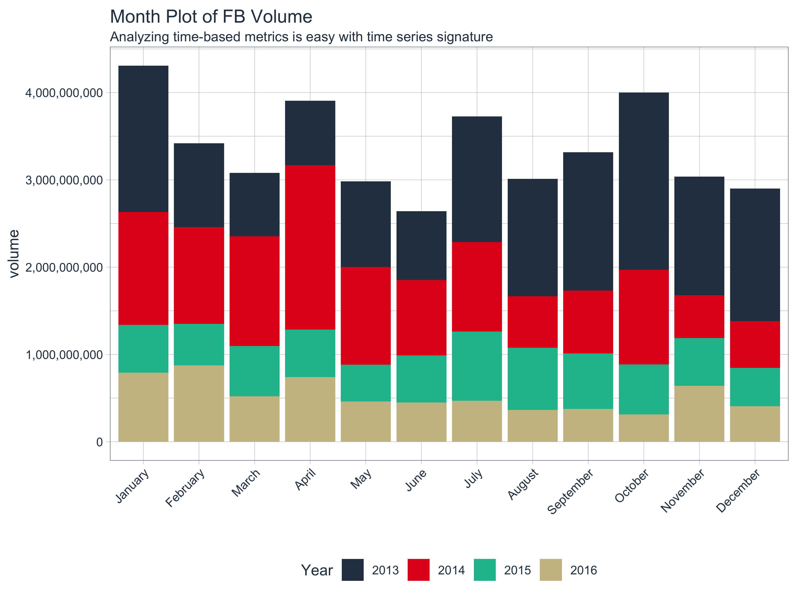

vignettes/TK01_Working_With_Time_Series_Index.Rmd
TK01_Working_With_Time_Series_Index.RmdA collection of tools for working with time series in R
The time series index, which consists of a collection of time-based values that define when each observation occurred, is the most important part of a time series object. The index gives the user a lot of information in a simple timestamp. Consider the datetime “2016-01-01 00:00:00”. From this timestamp, we can decompose the datetime to get the signature, which consists of the year, quarter, month, day, day of year, day of month, hour, minute, and second of the occurrence of a single observation. Further, the difference between two or more observations is the frequency from which we can obtain even more information such as the periodicity of the data and whether or not these observations are on a regular interval. This information is critical as it provides the basis for performance over time in finance, decay rates in biology, growth rates in economics, and so on.
In this vignette the user will be exposed to the time series index, tools to gain insights and work with it, and methods to work with time series data in general. The user will see several functions that can help to efficiently extract and analyze a time series index. Further, the user will see how to decompose an index (i.e. create a signature) and how to efficiently add the signature to a time series object (tbl with time basis, xts or zoo objects). In addition, the user will learn about summary metrics.
We’ll use the Facebook stock prices from the FANG data set from tidyquant. These are the historical stock prices (open, high, low, close, volume, and adjusted) for the “FB” stock from 2013 through 2016.
## # A tibble: 1,008 x 8
## symbol date open high low close volume adjusted
## <chr> <date> <dbl> <dbl> <dbl> <dbl> <dbl> <dbl>
## 1 FB 2013-01-02 27.4 28.2 27.4 28 69846400 28
## 2 FB 2013-01-03 27.9 28.5 27.6 27.8 63140600 27.8
## 3 FB 2013-01-04 28.0 28.9 27.8 28.8 72715400 28.8
## 4 FB 2013-01-07 28.7 29.8 28.6 29.4 83781800 29.4
## 5 FB 2013-01-08 29.5 29.6 28.9 29.1 45871300 29.1
## 6 FB 2013-01-09 29.7 30.6 29.5 30.6 104787700 30.6
## 7 FB 2013-01-10 30.6 31.5 30.3 31.3 95316400 31.3
## 8 FB 2013-01-11 31.3 32.0 31.1 31.7 89598000 31.7
## 9 FB 2013-01-14 32.1 32.2 30.6 31.0 98892800 31.0
## 10 FB 2013-01-15 30.6 31.7 29.9 30.1 173242600 30.1
## # … with 998 more rowsTo simplify the tutorial, we will select only the “date” and “volume” columns. For the FB_vol_date data frame, we can see from the “date” column that the observations are daily beginning on the second day of 2013.
## # A tibble: 1,008 x 2
## date volume
## <date> <dbl>
## 1 2013-01-02 69846400
## 2 2013-01-03 63140600
## 3 2013-01-04 72715400
## 4 2013-01-07 83781800
## 5 2013-01-08 45871300
## 6 2013-01-09 104787700
## 7 2013-01-10 95316400
## 8 2013-01-11 89598000
## 9 2013-01-14 98892800
## 10 2013-01-15 173242600
## # … with 998 more rowsTo show examples using alternative time series classes, we’ll summarize the data as yearqtr from the zoo package. We now see from the “date” column that the observations are quarterly beginning on the first quarter of 2013.
FB_vol_yearqtr <- FB_vol_date %>%
mutate(date = as.yearqtr(date)) %>%
group_by(date) %>%
summarize(volume = sum(volume))
FB_vol_yearqtr## # A tibble: 16 x 2
## date volume
## <yearqtr> <dbl>
## 1 2013 Q1 3360672000
## 2 2013 Q2 2508935500
## 3 2013 Q3 4366095000
## 4 2013 Q4 4907480100
## 5 2014 Q1 3660928900
## 6 2014 Q2 3867510400
## 7 2014 Q3 2340124400
## 8 2014 Q4 2109135400
## 9 2015 Q1 1596531700
## 10 2015 Q2 1501555300
## 11 2015 Q3 2135807400
## 12 2015 Q4 1558813800
## 13 2016 Q1 2188123300
## 14 2016 Q2 1652751000
## 15 2016 Q3 1212297600
## 16 2016 Q4 1361185100Before we can analyze an index, we need to extract it from the object. The function tk_index() extracts the index from any time series object including data frame (or tbl), xts, zoo, etc. The index is always returned in the native date, datetime, yearmon, or yearqtr format. Note that the index must be in one of these time-based classes for extraction to work:
POSIXt
Date
yearmon from the zoo packageyearqtr from the zoo packageExtract the index using tk_index(). The structure is shown to see the output format, which is a vector of dates.
## Date[1:1008], format: "2013-01-02" "2013-01-03" "2013-01-04" "2013-01-07" "2013-01-08" ...We can see a similar result with the yearqtr index. The obvious differences are fewer observations since the time series was aggregated quarterly and the output format is the yearqtr class.
# idx_yearqtr
idx_yearqtr <- tk_index(FB_vol_yearqtr)
paste0("class: ", class(idx_yearqtr), "\n",
"n.obs: ", length(idx_yearqtr), "\n",
"head: ", stringr::str_c(head(idx_yearqtr), collapse = ", ")) %>%
cat()## class: yearqtr
## n.obs: 16
## head: 2013 Q1, 2013 Q2, 2013 Q3, 2013 Q4, 2014 Q1, 2014 Q2The index can be decomposed into a signature. The time series signature is a unique set of properties of the time series values that describe the time series. The function tk_get_timeseries_signature() can be used to convert the index to a tibble containing the following values (columns):
"1970-01-01 00:00:00" %>% ymd_hms() %>% as.numeric() to see the value returned is zero). Every time series value after this date can be converted to a numeric value in seconds.xts implements.xts implements. Sunday = 0 and Saturday = 6.## # A tibble: 1,008 x 29
## index index.num diff year year.iso half quarter month month.xts
## <date> <int> <int> <int> <int> <int> <int> <int> <int>
## 1 2013-01-02 1.36e9 NA 2013 2013 1 1 1 0
## 2 2013-01-03 1.36e9 86400 2013 2013 1 1 1 0
## 3 2013-01-04 1.36e9 86400 2013 2013 1 1 1 0
## 4 2013-01-07 1.36e9 259200 2013 2013 1 1 1 0
## 5 2013-01-08 1.36e9 86400 2013 2013 1 1 1 0
## 6 2013-01-09 1.36e9 86400 2013 2013 1 1 1 0
## 7 2013-01-10 1.36e9 86400 2013 2013 1 1 1 0
## 8 2013-01-11 1.36e9 86400 2013 2013 1 1 1 0
## 9 2013-01-14 1.36e9 259200 2013 2013 1 1 1 0
## 10 2013-01-15 1.36e9 86400 2013 2013 1 1 1 0
## # … with 998 more rows, and 20 more variables: month.lbl <ord>, day <int>,
## # hour <int>, minute <int>, second <int>, hour12 <int>, am.pm <int>,
## # wday <int>, wday.xts <int>, wday.lbl <ord>, mday <int>, qday <int>,
## # yday <int>, mweek <int>, week <int>, week.iso <int>, week2 <int>,
## # week3 <int>, week4 <int>, mday7 <int>We can also get the signature of other time-based objects. The tk_get_timeseries_signature() function works with date, datetime, yearmon, and yearqtr vectors.
## # A tibble: 16 x 29
## index index.num diff year year.iso half quarter month month.xts
## <yea> <int> <int> <int> <int> <int> <int> <int> <int>
## 1 2013… 1.36e9 NA 2013 2013 1 1 1 0
## 2 2013… 1.36e9 7776000 2013 2013 1 2 4 3
## 3 2013… 1.37e9 7862400 2013 2013 2 3 7 6
## 4 2013… 1.38e9 7948800 2013 2013 2 4 10 9
## 5 2014… 1.39e9 7948800 2014 2014 1 1 1 0
## 6 2014… 1.40e9 7776000 2014 2014 1 2 4 3
## 7 2014… 1.40e9 7862400 2014 2014 2 3 7 6
## 8 2014… 1.41e9 7948800 2014 2014 2 4 10 9
## 9 2015… 1.42e9 7948800 2015 2015 1 1 1 0
## 10 2015… 1.43e9 7776000 2015 2015 1 2 4 3
## 11 2015… 1.44e9 7862400 2015 2015 2 3 7 6
## 12 2015… 1.44e9 7948800 2015 2015 2 4 10 9
## 13 2016… 1.45e9 7948800 2016 2015 1 1 1 0
## 14 2016… 1.46e9 7862400 2016 2016 1 2 4 3
## 15 2016… 1.47e9 7862400 2016 2016 2 3 7 6
## 16 2016… 1.48e9 7948800 2016 2016 2 4 10 9
## # … with 20 more variables: month.lbl <ord>, day <int>, hour <int>,
## # minute <int>, second <int>, hour12 <int>, am.pm <int>, wday <int>,
## # wday.xts <int>, wday.lbl <ord>, mday <int>, qday <int>, yday <int>,
## # mweek <int>, week <int>, week.iso <int>, week2 <int>, week3 <int>,
## # week4 <int>, mday7 <int>It’s usually important to keep the index signature with the values (e.g. volume in our example). We can use an expedited approach with tk_augment_timeseries_signature(), which adds the signature to the end of the time series object. Note that xts and zoo objects only retain numeric columns and therefore “month.lbl” and “wday.lbl” columns will be dropped. We’ll use the tk_augment_timeseries_signature() function on the dataframe FB_vol_date which contains the date and volume columns.
# Augmenting a data frame
FB_vol_date_signature <- tk_augment_timeseries_signature(FB_vol_date)
FB_vol_date_signature## # A tibble: 1,008 x 30
## date volume index.num diff year year.iso half quarter month
## <date> <dbl> <int> <int> <int> <int> <int> <int> <int>
## 1 2013-01-02 6.98e7 1.36e9 NA 2013 2013 1 1 1
## 2 2013-01-03 6.31e7 1.36e9 86400 2013 2013 1 1 1
## 3 2013-01-04 7.27e7 1.36e9 86400 2013 2013 1 1 1
## 4 2013-01-07 8.38e7 1.36e9 259200 2013 2013 1 1 1
## 5 2013-01-08 4.59e7 1.36e9 86400 2013 2013 1 1 1
## 6 2013-01-09 1.05e8 1.36e9 86400 2013 2013 1 1 1
## 7 2013-01-10 9.53e7 1.36e9 86400 2013 2013 1 1 1
## 8 2013-01-11 8.96e7 1.36e9 86400 2013 2013 1 1 1
## 9 2013-01-14 9.89e7 1.36e9 259200 2013 2013 1 1 1
## 10 2013-01-15 1.73e8 1.36e9 86400 2013 2013 1 1 1
## # … with 998 more rows, and 21 more variables: month.xts <int>,
## # month.lbl <ord>, day <int>, hour <int>, minute <int>, second <int>,
## # hour12 <int>, am.pm <int>, wday <int>, wday.xts <int>, wday.lbl <ord>,
## # mday <int>, qday <int>, yday <int>, mweek <int>, week <int>,
## # week.iso <int>, week2 <int>, week3 <int>, week4 <int>, mday7 <int>Analyzing the time series is now easier with the decomposed measures. For example, we can create a month plot very easily in ggplot2.
# Example Benefit 1: Making a month plot
FB_vol_monthly <- FB_vol_date_signature %>%
group_by(year, month.lbl) %>%
summarize(volume = sum(volume))
FB_vol_monthly %>%
ggplot(aes(x = month.lbl, y = volume, fill = factor(year))) +
geom_bar(stat = "identity") +
labs(title = "Month Plot of FB Volume", x ="", fill = "Year",
subtitle = "Analyzing time-based metrics is easy with time series signature") +
theme_tq() +
theme(axis.text.x = element_text(angle = 45, hjust = 1)) +
scale_fill_tq() +
scale_y_continuous(labels = scales::comma)
Modeling is also much easier. As an example, we can use linear regression model using the lm() function with the month and year as a predictor of volume.
# Example Benefit 2: Modeling is easier
fit <- lm(volume ~ year + month.lbl, data = FB_vol_monthly)
summary(fit)##
## Call:
## lm(formula = volume ~ year + month.lbl, data = FB_vol_monthly)
##
## Residuals:
## Min 1Q Median 3Q Max
## -630168696 -241179924 -2717615 163606096 776716101
##
## Coefficients:
## Estimate Std. Error t value Pr(>|t|)
## (Intercept) 5.275e+11 8.527e+10 6.186 4.40e-07 ***
## year -2.614e+08 4.233e+07 -6.176 4.53e-07 ***
## month.lbl.L -1.492e+08 1.639e+08 -0.910 0.369
## month.lbl.Q 1.035e+08 1.639e+08 0.632 0.532
## month.lbl.C -2.024e+08 1.639e+08 -1.235 0.225
## month.lbl^4 -3.825e+07 1.639e+08 -0.233 0.817
## month.lbl^5 -7.598e+07 1.639e+08 -0.463 0.646
## month.lbl^6 1.280e+08 1.639e+08 0.781 0.440
## month.lbl^7 1.356e+07 1.639e+08 0.083 0.935
## month.lbl^8 5.948e+07 1.639e+08 0.363 0.719
## month.lbl^9 2.479e+08 1.639e+08 1.512 0.140
## month.lbl^10 -9.894e+07 1.639e+08 -0.604 0.550
## month.lbl^11 -1.019e+08 1.639e+08 -0.622 0.538
## ---
## Signif. codes: 0 '***' 0.001 '**' 0.01 '*' 0.05 '.' 0.1 ' ' 1
##
## Residual standard error: 327900000 on 35 degrees of freedom
## Multiple R-squared: 0.5622, Adjusted R-squared: 0.4121
## F-statistic: 3.746 on 12 and 35 DF, p-value: 0.001102The next index analysis tool is the summary metrics, which can be retrieved using the tk_get_timeseries_summary() function. The summary reports the following attributes as a single-row tibble.
General Summary:
The first six columns are general summary information.
Differences Summary:
The next group of values are the differences summary (i.e. summary of frequency). All values are in seconds:
The differences provide information about the regularity of the frequency. Generally speaking if all difference values are equal, the index is regular. However, scales beyond “day” are never theoretically regular since the differences in seconds are not equivalent. However, conceptually monthly, quarterly and yearly data can be thought of as regular if the index contains consecutive months, quarters, or years, respectively. Therefore, the difference attributes are most meaningful for daily and lower time scales because the difference summary always indicates level of regularity.
We can get the time series summary using tk_get_timeseries_summary(). We’ll split the output into six columns to view in the vignette. From the first group summary (general summary), we recognize that there are 1008 observations that span 2013 through 2016. The “units” of each index value are in “days”, and the “scale” of the index values is “day” for daily periodicity.
## # A tibble: 1 x 6
## n.obs start end units scale tzone
## <int> <date> <date> <chr> <chr> <chr>
## 1 1008 2013-01-02 2016-12-30 days day UTCFrom the second group (differences summary), we immediately recognize that the mean is different than the median and therefore the index is irregular (meaning certain days are missing). Further we can see that the maximum difference is 345,600 seconds, indicating the maximum difference is 4 days (345,600 seconds / 86400 seconds/day).
## # A tibble: 1 x 6
## diff.minimum diff.q1 diff.median diff.mean diff.q3 diff.maximum
## <dbl> <dbl> <dbl> <dbl> <dbl> <dbl>
## 1 86400 86400 86400 125096. 86400 345600We can also get the summary from the quarterly data using tk_get_timeseries_summary(). The general summary for the quarterly output may not be what is expected because the “units” are reported as “days”. This is because the maximum unit for an index value is days regardless of timeseries class. As anticipated the scale is “quarterly”.
## # A tibble: 1 x 6
## n.obs start end units scale tzone
## <int> <yearqtr> <yearqtr> <chr> <chr> <chr>
## 1 16 2013 Q1 2016 Q4 days quarter UTCThe difference summary indicates that the timeseries is irregular, which also may not be what is expected. This is because, when measured in seconds, the difference values between observations (quarters) varies. Some quarters have more seconds than others. With this said, the quarterly data can be conceptualized as regular because the class is quarterly with all consecutive quarters present in the timespan.
## # A tibble: 1 x 6
## diff.minimum diff.q1 diff.median diff.mean diff.q3 diff.maximum
## <dbl> <dbl> <dbl> <dbl> <dbl> <dbl>
## 1 7776000 7862400 7862400 7885440 7948800 7948800